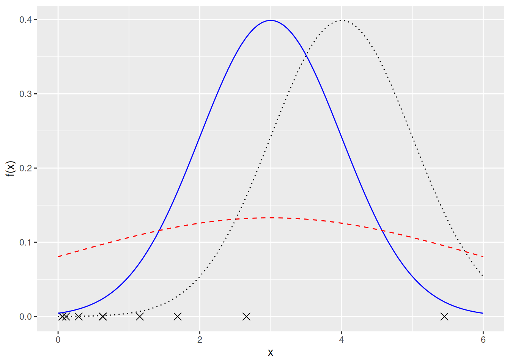
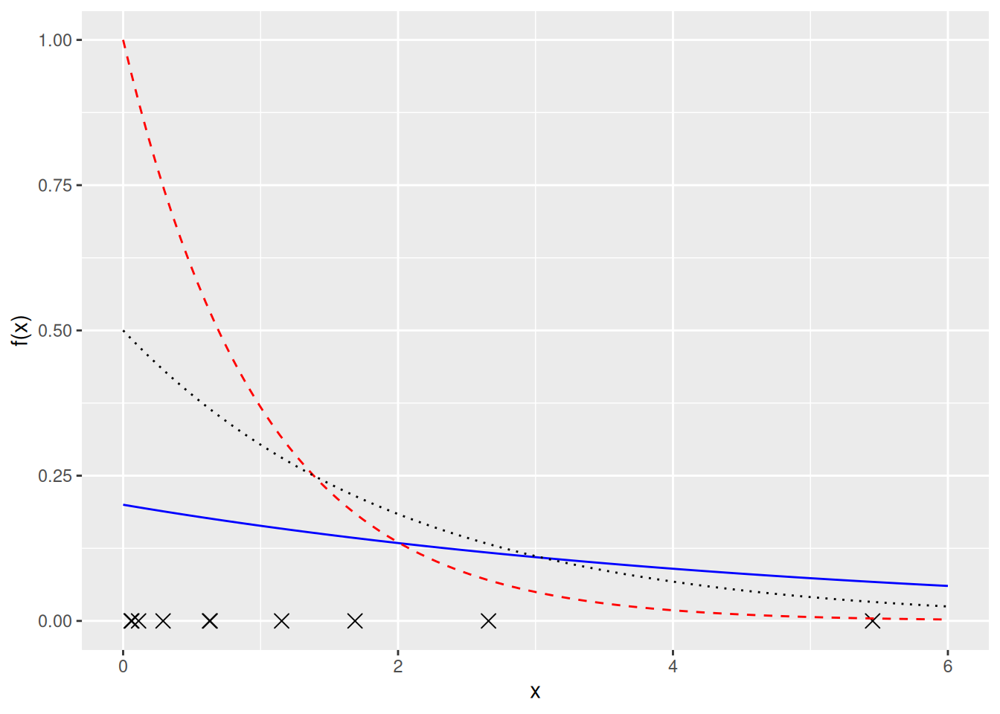
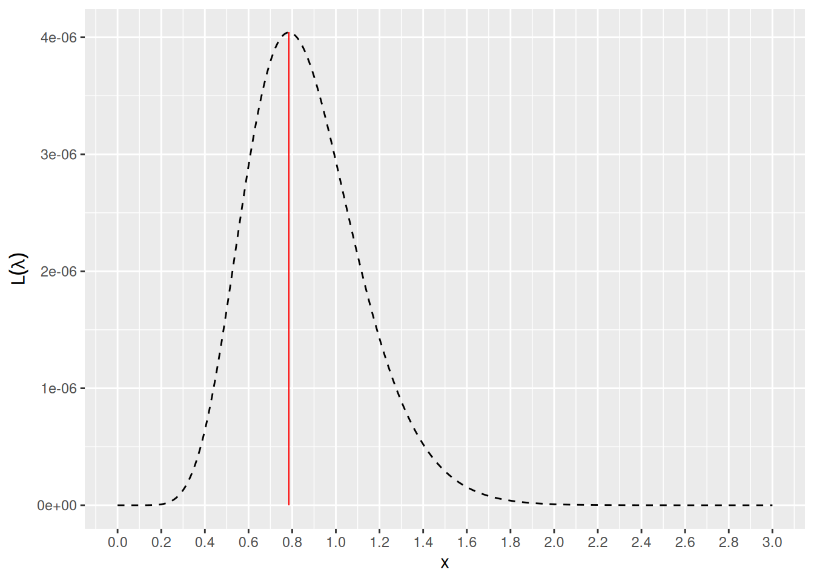
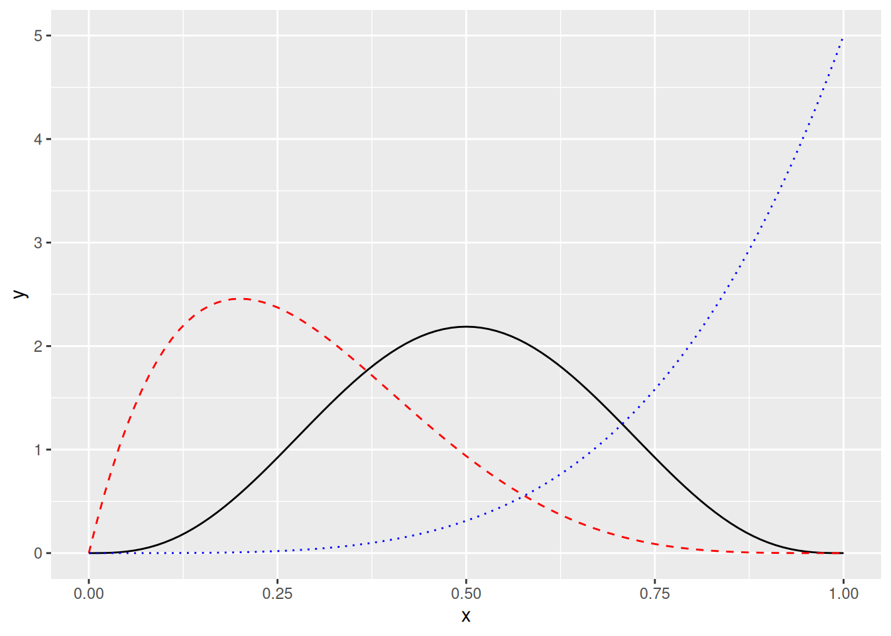
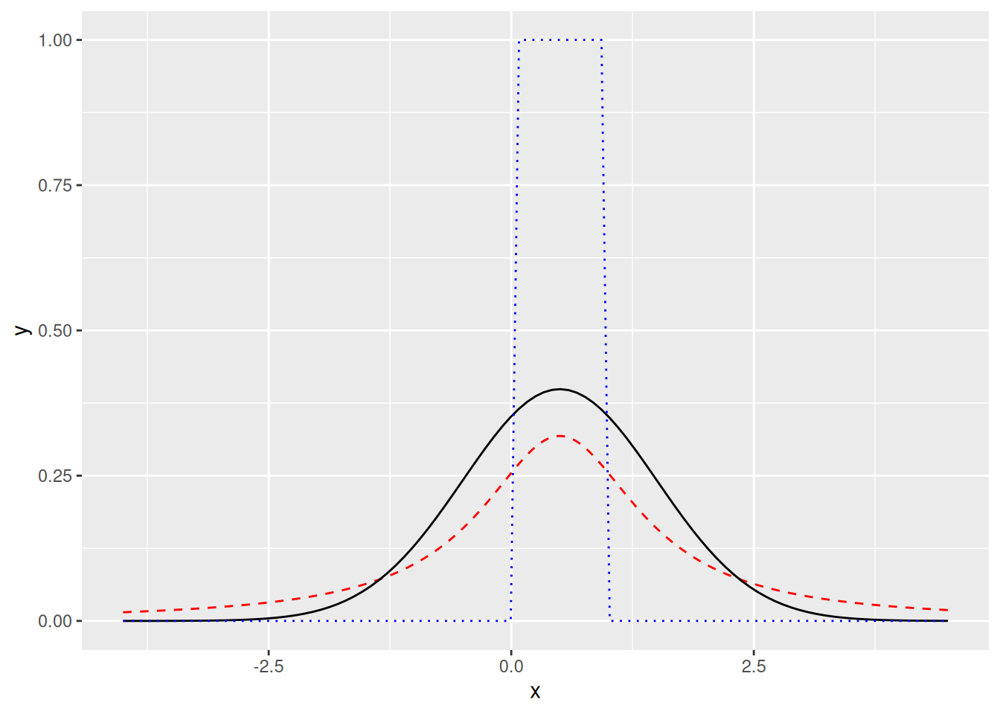

Luku 7 Estimoinnista
Kurssilla Tilastotieteen perusteet esiteltiin tilastollisen estimoinnin peruskäsitteitä ja ideaa. On siis tavallista olettaa, että data noudattaa jotain tilastollista mallia, joka riippuu parametri(vektorista) \(\theta_0\). Alla on kaksi esimerkkiä tilastollisista malleista.
Verkkokaupan ostotapahtumien aikavali on satunnainen mutta noudattaa eksponenttijakaumaa parametrilla \(\theta_0 = \lambda_0\).
Voittoja mallinnetaan lineaarisella regressiolla \[\begin{equation*} \texttt{voitto}_i = \beta_0 + \beta_1 \texttt{mainostus}_i + \beta_2 \texttt{hinta}_i + \varepsilon_i, \end{equation*}\] jossa \(\theta_0 = \left(\beta_0, \beta_1, \beta_2\right)\).
Kuitenkin työelämän data-analyyseissä mallin parametrivektori \(\theta_0\) on tuntematon17. Saatavilla on vain dataa, jonka avulla voimme “arvata” eli estimoida parametrin \(\theta_0\) arvon.
Haluttuja estimaattorin \(\hat\theta\) ominaisuuksia ovat tarkentuvuus ja harhattomuus. Tarkentuvuus tarkoittaa sitä, että suurella otoskoolla estimaattorin18 antama estimaatti19 on lähellä parametrin arvoa eli \(\hat\theta \approx \theta\). Harhattomuus tarkoittaa sitä, että monesta otoksesta laskettujen estimaattien keskiarvo on lähellä oikeaa parametrin arvoa eli formaalisti \(\mathbb{E}\left(\hat\theta\right) = \theta\).
Tässä luvussa esittelemme kaksi erilaista estimointimenetelmää. Luvussa 7.1 esittelemme suurimman uskottavuuden menetelmän ja luvussa 7.3 esittelemme momenttimenetelmän. Ennen momenttimenetelmää luvussa 7.2 tutustumme momentin käsitteeseen. Vaikka rajoitumme yksiulotteisiin jakaumiin, niin esitellyt menetelmät yleistyvät myös moniulotteisille jakaumille.
7.1 Suurimman uskottavuuden menetelmä
Olkoon \(\overrightarrow{x} = \{x_1, \ldots, x_n\}\) otos yksiulotteisesta parametrisesta jakaumasta \(F_{\theta_0}\), \(\theta_0\in\mathbb{R}^d\). Suurimman uskottavuuden (SU, eng: maximum likelihood) menetelmä on eräs tärkeimmistä estimointimenetelmistä määrittää paras arvaus eli estimaatti parametrille \(\theta_0\) havaitun datan perusteella \(\overrightarrow{x}\). SU-menetelmän idea on seuraava.
Data-analyytikko tekee valistuneen arvauksen siitä millainen on jakauman \(F_{\theta_0}\) “muoto”. Voidaan esimerkiksi olettaa, että data tulee normaalijakaumasta, eksponenttijakaumasta, Poisson jakaumasta, tasajakaumasta, binomijakaumasta jne. Tässä vaiheessa ei vielä oteta kantaa siihen, mikä on jakauman \(F_{\theta_0}\) todelllinen parametri \(\theta_0\).
Seuraavaksi SU-menetelmällä valitaan kaikista mahdollisista jakaumavaihtoehdoista \(\{F_{\theta} : \theta\in\mathbb{R}^d\}\) se jakauma \(F_{\hat\theta}\), josta otos \(\overrightarrow{x}\) tulee kaikista todennäköisimmin. Tätä jakaumaa vastaava parametri \(\hat\theta\) on suurimman uskottavuuden estimaatti tuntemattomalle parametrille \(\theta_0\) otokseen \(\overrightarrow{x}\) perustuen.
Seuraava esimerkki avaa tarkemmin SU-menetelmän ideaa.
Esimerkki 7.1 (SU-menetelmän idea) Verkkokauppa kamatson on kiinnostunut mallintamaan ostotapahtumiensa tiheyttä. Saatavilla on kokoa \(n = 10\) oleva otos, jonka havainnot kuvaavat ostotapahtumien aikavälejä sekunneissa20.
## [1] 1.68691452 1.15322054 2.65810974 0.06315472 0.11242195 0.63300243
## [7] 0.62845458 0.29053361 5.45247293 0.05830689Olisiko järkevää olettaa, että otoksen havainnot noudattavat normaalijakaumaa \(N(\mu_0, \sigma_0^2)\)? Normaalijakauman tiheysfunktio on muotoa
\[\begin{equation*}
f(x; \mu, \sigma^2) = \frac{1}{\sqrt{2\pi\sigma^2}} e^{-\frac{(x - \mu)^2}{2\sigma^2}}.
\end{equation*}\]
Tällöin datan x perusteella haluamme estimoida tuntemattoman parametrivektorin \(\theta_0 = (\mu_0, \sigma_0^2)\). Voisiko parametrivektori olla \(\theta_0 = (3, 1)\), \(\theta_0 = (3, 3)\) tai \(\theta_0 = (4, 1)\)? Vastausta edellä olevaan kysymykseen voidaan arvioida visuaalisesti kuvan 7.1 avulla.

Kuva 7.1: Rastit \(x\)-akselilla kuvaavat havaintoja. Käyrät kuvaavat erilaisten normaalijakaumien tiheysfunktioita (sininen kiinteä viiva: \((\mu, \sigma^2) = (3, 1)\), punainen katkoviiva: \((\mu, \sigma^2) = (3, 3)\) ja musta pisteviiva: \((\mu, \sigma^2) = (4, 1)\)).
Kuvan 7.1 havaintojen (rastien) perusteella näyttää kuitenkin siltä, että ostovälien jakauma ei ole symmetrinen. Lisäksi ostovälit eivät voi olla negatiivisia. Eli on melko epärealistista olettaa, että data tulisi normaalijakaumasta.
Toisaalta voimme olettaa, että otos x tulee eksponenttijakaumasta \(\mathrm{Exp}(\lambda_0)\), jonka tiheysfunktio on muotoa
\[\begin{equation}
\tag{7.1}
f(x; \lambda) =
\begin{cases}
\lambda e^{-\lambda x},& x\geq 0, \\
0,& x < 0.
\end{cases}
\end{equation}\]
Datan x perusteella haluamme estimoida tuntemattoman parametrin \(\theta_0 = \lambda_0\). Voisiko parametri olla \(\lambda_0 = 0.2\), \(\lambda_0 = 1\) tai \(\lambda_0 = 0.5\)? Vastausta edellä olevaan kysymykseen voidaan arvioida visuaalisesti kuvan 7.2 avulla.

Kuva 7.2: Rastit \(x\)-akselilla kuvaavat havaintoja. Käyrät kuvaavat erilaisten eksponenttijakaumien tiheysfunktioita (sininen kiinteä viiva: \(\lambda = 0.2\), punainen katkoviiva: \(\lambda = 1\) ja musta pisteviiva: \(\lambda = 0.5\)).
Oletus siitä, että ostotapahtumien aikavälit ovat eksponenttijakaumasta on paljon realistisempi. Ensinnäkin jakaumasta on mahdollista saada vain positiivisia arvoja. Lisäksi eksponenttijakauma on yksi yleisimmistä malleista esimerkiksi odotusajalle
seuraavaan ostotapahtumaan,
seuraavaan tietokoneen vastaanottamaan datapakettiin,
seuraavaan junan komponentin vikaantumiseen jne.,
kun tapahtumien keskimääräinen taajuus \(\lambda\) pysyy vakiona. Mitä suurempi \(\lambda\) sitä tiheämmin tapahtumia (tässä tapauksessa ostoja nettikaupasta) tapahtuu.
Kuten esimerkiksi kuvasta 7.2 huomataan, on erittäin vaikea arvioida visuaalisesti, mikä olisi todellinen parametrin arvo \(\theta_0\). Tässä kuvaan astuu SU-menetelmä, jota kuvailemme seuraavaksi tarkemmin.
Tässä oletamme otoksen \(\overrightarrow{x}\) havaintojen olevan riippumattomia, mikä yksinkertaistaa SU-menetelmän suorittamista. Lisäksi käytämme seuraavia notaatioita. Olkoon \(F_\theta\) parametrin \(\theta\) määräämä jakauma. Tällöin \(f(x;\theta)\) tarkoittaa parametrin \(\theta\) määräämää tiheysfunktiota, jos jakauma \(F_\theta\) on jatkuva. Toisaalta jos jakauma \(F_\theta\) on diskreetti (kuten binomijakauma), niin \(f(x;\theta)\) tarkoittaa parametrin \(\theta\) määräämää pistetodennäköisyysfunktiota. Notaatiossa \(f(x_1; x_2)\) puolipisteen vasemmalla olevaa suuretta \(x_1\) käsitellään muuttujana ja oikealla puolella olevaa suuretta \(x_2\) käsitellään vakiona. Tällöin voimme myös kirjoittaa \(f(\theta; x)\), jos haluamme käsitellä tiheys- tai pistetodennäköisyysfunktiota parametrin \(\theta\) funktiona.
SU-menetelmän ensimmäinen askel on määrittää niin kutsuttu uskottavuusfunktio \(L\left(\theta; \overrightarrow{x}\right)\). Uskottavuusfunktio on siis jakauman parametrin \(\theta\) funktio, kun ollaan havaittu otos \(\overrightarrow{x}\). Uskottavuusfunktio määritellään tiheys- tai pistetodennäköisyysfunktion arvojen tulona \[\begin{equation*} L\left(\theta; \overrightarrow{x}\right) = f(\theta; x_1)\cdot f(\theta; x_2) \ldots\cdot f(\theta; x_n) = \prod_{i = 1}^n f(\theta; x_i), \end{equation*}\] kun havaintojen \(x_i\) oletetaan olevan riippumattomia. Alla on esimerkki uskottavuusfunktion määrittämisestä saadun otoksen avulla.
Esimerkki 7.2 (Uskottavuusfunktion määrittäminen) Oletetaan, että ollaan havaittu otos \(\overrightarrow{x} = \{x_1, x_2, \ldots, x_{10}\}\) riippumattomia havaintoja. Oletetaan, että havainnot tulevat eksponenttijakaumasta \(\mathrm{Exp}(\lambda_0)\), jossa parametri \(\lambda_0\) on tuntematon. Nyt otosta vastaava uskottavuusfunktio on \[\begin{equation*} \begin{split} L\left(\lambda; \overrightarrow{x}\right) &= \left(\lambda e^{-\lambda x_1}\right) \cdot \left(\lambda e^{-\lambda x_2}\right) \cdot \ldots \cdot \left(\lambda e^{-\lambda x_{10}}\right) \\ &= \lambda^{10} \left(e^{-\lambda x_1} \cdot e^{-\lambda x_2} \cdot \ldots \cdot e^{-\lambda x_{10}}\right) \\ &= \lambda^{10} e^{-\lambda \left(x_1 + x_2 + \cdot + x_{10}\right)} = \lambda^{10} e^{-\lambda \left(\sum_{i = 1}^n x_i\right)} \end{split} \end{equation*}\]
Kun uskottavuusfunktio ollaan määritetty, niin sitä käytetään halutun parametri(vektori)n \(\theta_0\) estimointiin. Etsimme siis arvon \(\hat\theta\), jolla maksimoimme uskottavuusfunktion \[\begin{equation*} L\left(\hat\theta; \overrightarrow{x} \right) = \max_{\theta} L\left(\theta; \overrightarrow{x} \right). \end{equation*}\] Näin määritettyä suuretta \(\hat\theta\) kutsutaan parametrin \(\theta_0\) suurimman uskottavuuden estimaattoriksi. Yksinkertaisissa tapauksissa uskottavuusfunktion maksimikohta eli suurimman uskottavuuden estimaattori voidaan löytää käsin – selvitetään uskottavuusfunktion derivaatan nollakohdat ja tarkistetaan, että nollakohta on maksimi. Monimutkaisemmissa tapauksissa maksimin ratkaisuun tarvitaan numeerisia algoritmeja.
Tämän kurssin tavoite on kuitenkin vain esitellä suurimman uskottavuuden menetelmän idea, joten emme esimerkiksi ratkaise uskottavuusfunktion maksimikohtaa käsin (paitsi lisätietona huomautuksessa 7.1). Alla olevassa esimerkissä arvioimme visuaalisesti suurimman uskottavuuden estimaatin arvon saadun otoksen avulla.
Esimerkki 7.3 (Uskottavuusfunktion maksimin löytäminen) Oletetaan, että esimerkin 7.1 otoksen x havainnot ovat riippumattomia ja tulevat jakaumasta \(\mathrm{Exp}(\lambda_0)\). Kirjoitetaan nyt otosta vastaava uskottavuusfunktio, jonka kaava ratkaistiin esimerkissä 7.2. Tätä varten muodostamme oman R funktion. Funktioita voidaan muodostaa seuraavalla syntaksilla.
function_name <- function(parameter_1, parameter_2, ..., parameter_d) {
# Do something with parameters 1, ..., d and save the result in a variable.
# The name of the variable can be for example output.
output <- ...
# Then return the output
output
}Katso lisätietoja funktioista esimerkiksi monisteen R tutuksi luvusta 6.
Uskottavuusfunktio muodostetaan alla.
Nyt voimme laskea uskottavuusfunktion arvon esimerkiksi kohdassa \(\lambda = 0.1\).
## [1] 2.798059e-11
Kuva 7.3: Katkoviivalla kuvattu käyrä antaa 7.1 dataa x vastaavan uskottavuusfunktion, kun oletetaan datan noudattavan eksponenttijakaumaa. Punainen pystyviiva on piirretty uskottavuusfunktion \(L(\lambda; \overrightarrow{x})\) maksimin kohdalle.
Jos olet kiinnostunut, niin alla olevassa huomautuksessa johdamme SU-estimaattorin eksponenttijakauman parametrille \(\lambda_0\). Tämä on kuitenkin vain lisätietoa eikä kuulu kurssin osaamistavoitteisiin.
Huomautus 7.1 (Lisätietoa esimerkistä 7.3) Olkoon \(\overrightarrow{x} = \{x_1, x_2, \ldots, x_n\}\) kokoa \(n\) oleva otos riippumattomia havaintoja jakaumasta \(\mathrm{Exp}(\lambda_0)\). Esimerkin 7.2 uskottavuusfunktio otoskoolle \(10\) voidaan yleistää otoskoolle \(n\), \[\begin{equation*} L\left(\lambda; \overrightarrow{x}\right) = \lambda^n e^{-\lambda \left(\sum_{i = 1}^n x_i\right)} = \lambda^n e^{-\lambda n\bar x}, \end{equation*}\] jossa \(\bar x = \frac{1}{n}\sum_{i = 1}^n x_i\). Yleinen kikka on käsitellä funktiota \(\ln L\) alkuperäisen uskottavuusfunktion \(L\) sijaan, koska nämä funktiot saavuttavat maksimin samassa kohdassa (mieti miksi). Nyt \[\begin{equation*} \ln L\left(\lambda; \overrightarrow{x}\right) = \ln\left(\lambda^n\right) + \ln\left(e^{-\lambda n\bar x}\right) = n\ln\lambda - \lambda n\bar x. \end{equation*}\] Seuraavaksi selvitetään funktion \(\ln L\) derivaatan nollakohdat. \[\begin{align*} &\frac{\mathrm{d}\ln L\left(\lambda; \overrightarrow{x}\right)} {\mathrm{d}\lambda} = 0 \\ \iff &\frac{n}{\lambda} - n\bar x = 0 \\ \iff & \lambda = \frac{1}{\bar x}. \end{align*}\] Täytyy vielä todistaa, että \(\lambda = 1/\bar x\) on maksimikohta (eikä esimerkiksi minimikohta). Voimme laskea, että \[\begin{equation*} \frac{\mathrm{d}^2\ln L\left(\lambda; \overrightarrow{x}\right)} {\mathrm{d}\lambda^2} = - \frac{n}{\lambda^2} < 0 \quad\text{kaikilla}\quad \lambda > 0. \end{equation*}\] Koska funktion \(\ln L\) toinen derivaatta on negatiivinen kaikilla mahdollisilla parametrin \(\lambda\) arvoilla, niin \(\ln L\) on konkaavi, joten \(1/\bar x\) on funktion \(\ln L\) ja täten uskottavuusfunktion \(L\) maksimikohta. Kaiken kaikkiaan \(\hat \lambda = 1 / \bar x\) on parametrin \(\lambda_0\) suurimman uskottavuuden estimaattori. Nyt voimme vielä laskea esimerkkiin 7.3 liittyvän suurimman uskottavuuden estimaatin tarkasti.
## [1] 0.7851394Suurimman uskottavuuden teoreettisista ominaisuuksista voimme sanoa seuraavat faktat.
Tiettyjen (melko lievien) oletusten alla suurimman uskottavuuden estimaattori on tarkentuva eli \(\hat\theta \approx \theta_0\) suurella otoskoolla \(n\).
Suurimman uskottavuuden estimaattori voi olla harhainen. Itseasiassa SU-estimaattori eksponenttijakauman parametrille \(\lambda_0\) on harhainen.
Tässä kävimme esimerkkejä liittyen SU-menetelmään vain jatkuvien jakaumien tapauksissa. Kuitenkin SU-menetelmä toimii samalla tavalla myös diskreeteille jakaumille (viikko 9, tehtävä 1).
7.2 Esittely momentteihin
Satunnaismuuttujan \(X\) momentteja (eng: moment) ovat odotusarvot \(\mathbb{E}(f(X))\) eri funktion \(f\) valinnoilla. Esimerkiksi
raaka odotusarvo \(\mu = \mathbb{E}(X)\) valinnalla \(f(x) = x\) ja
varianssi \(\mathrm{Var}(X) = \mathbb{E}\left(\left(X - \mu\right)^2\right)\) valinnalla \(f(x) = \left(x - \mu\right)^2\)
ovat momentteja. Odotusarvo kuvaa satunnaismuuttujaa \(X\) vastaavan jakauman sijaintia ja varianssi kuvaa satunnaismuuttujaan \(X\) liittyvää vaihtelua. Momentit siis kuvaavat satunnaismuuttujan \(X\) jakaumaa jollain tavalla. Tämän vuoksi on myös tyypillistä estimoida momentteja otoksen avulla. Olkoon \(\overrightarrow{x} = \{x_1, x_2, \ldots, x_n\}\) otos riippumattomia havaintoja satunnaismuuttujasta \(X\). Tällöin tutut tarkentuvat ja harhattomat estimaattorit odotusarvolle ja varianssille ovat \[\begin{equation} \tag{7.2} \bar x = \frac{1}{n}\sum_{i = 1}^n x_i \quad\text{ja}\quad s^2 = \frac{1}{n - 1} \sum_{i = 1}^n \left(x_i - \bar x\right)^2. \end{equation}\]
On myös muita momentteja, kuten vinous (eng: skewness). Merkitään \(\mu = \mathbb{E}(X)\) ja \(\sigma = \sqrt{\mathrm{Var}(X)}\). Tällöin vinous \(\gamma_1\) määritellään seuraavasti, \[\begin{equation*} \gamma_1 = \mathbb{E}\left(\left(\frac{X - \mu}{\sigma}\right)^3\right) = \frac{\mathbb{E}\left(\left(X - \mu\right)^3\right)}{\sigma^3}. \end{equation*}\] Eli vinous on satunnaismuuttujan \(X\) momentti, koska valinnalla \(f(x) = \left((x - \mu)/\sigma\right)^3\) voimme kirjoittaa \(\gamma_1 = f(X)\). Vinous kuvaan jakauman (epä)symmetrisyyttä odotusarvon \(\mu\) ympärillä.
Jos \(\gamma_1 = 0\), niin tyypillisesti satunnaismuuttujan \(X\) jakauma on symmetrinen odotusarvon \(\mu\) suhteen.
Jos \(\gamma_1 > 0\), niin tyypillisesti satunnaismuuttujan \(X\) jakauma on oikealle vino.
\(\rightarrow\) Satunnaismuuttujan \(X\) jakauman oikea häntä on pidempi kuin vasen häntä.
Jos \(\gamma_1 < 0\), niin satunnaismuuttujan \(X\) jakauma on tyypillisesti vasemmalle vino.
\(\rightarrow\) Satunnaismuuttujan \(X\) vasen häntä on pidempi kuin oikea häntä.

Kuva 7.4: Musta kiinteä käyrä on erään symmetrisen jakauman (\(\gamma_1 = 0\)) tiheysfunktio, punainen katkoviivakäyrä on erään oikealle vinon jakauman (\(\gamma_1 > 0\)) tiheysfunktio ja sininen pisteviivakäyrä on erään vasemmalle vinon jakauman (\(\gamma_1 < 0\)) tiheysfunktio.
Taas kerran koska käytännön sovelluksissa saatavilla on ainostaan data \(\overrightarrow{x} = \{x_1, x_2, \ldots, x_n\}\) eikä alla olevaa jakaumaa tiedetä, niin on luonnollista estimoida vinous otoksen avulla. Tarkentuva ja harhaton estimattori vinoudelle onkin \[\begin{equation*} \hat\gamma_1 = \frac{n}{(n - 1)(n - 2)}\sum_{i = 1}^n \left(\frac{x_i - \bar x}{s}\right)^3, \end{equation*}\] jossa \(\bar x\) ja \(s = \sqrt{s^2}\) saadaan kaavasta (7.2).
Esitellään vielä yksi momentti, johon koodattu jotain tietoa satunnaismuuttujan \(X\) jakaumasta. Huipukkuus (eng: kurtosis, peakedness) \(\gamma_2\) määritellään olevan \[\begin{equation*} \gamma_2 = \mathbb{E}\left(\left(\frac{X - \mu}{\sigma}\right)^4\right) = \frac{\mathbb{E}\left(\left(X - \mu\right)^4\right)}{\mathrm{Var}(X)^2}. \end{equation*}\] Myös huipukkuus on satunnaismuuttujan \(X\) momentti, koska valinnalla \(f(x) = \left((x - \mu)/\sigma\right)^4\) voimme kirjoittaa \(\gamma_2 = f(X)\). Huipukkuus kuvaa jakauman häntien paksuutta.
Korkea huipukkuuden arvo kuvaa sitä, että äärihavaintojen todennäköisyys on suhteellisen suuri.
Pieni huipukkuuden arvo kuvaa, sitä että äärihavaintojen todennäköisyys on suhteellisen pieni.
Hyvä vertailukohta-arvo huipukkuudelle on 3, koska normaalijakaumalle \(\gamma_2 = 3\). Jos \(\gamma_2 < 3\), niin jakauman hännät ovat kevyemmät kuin normaalijakauman. Jos \(\gamma_2 > 3\), niin jakauman hännät ovat paksummat kuin normaalijakauman21. Kuvassa 7.5 näkyy normaalijakauma, normaalijakaumaa kevythäntäisempi jakauma ja normaalijakaumaa paksuhäntäisempi jakauma.

Kuva 7.5: Musta kiinteä käyrä on erään normaalijakauman (\(\gamma_2 = 3\)) tiheysfunktio, punainen katkoviivakäyrä on paksuhäntäisen jakauman (\(\gamma_2 > 3\)) tiheysfunktio ja sininen pisteviivakäyrä on erään kevythäntäisen jakauman (\(\gamma_2 < 3\)) tiheysfunktio.
Tarkentuva estimaattori huipukkuudelle on \[\begin{equation*} \hat\gamma_2 = \frac{\frac{1}{n}\sum_{i = 1}^n \left(x_i - \bar x\right)^4}{\left(\frac{1}{n}\sum_{i = 1}^n (x_i - \bar x)^2\right)^2}. \end{equation*}\] Kyseinen estimaattori on harhainen äärellisillä otoksilla. Harhattoman estimaattorin kehittäminen huipukkuudelle ei ole yksinkertaista.
Huomautus 7.2 Yllä oletimme sanomatta, että kaikki relevantit satunnaismuuttujan \(X\) momentit \(\mathbb{E}\left(f(X)\right)\) ovat olemassa. Näin ei kuitenkaan aina ole. Jos jakauman hännät ovat tarpeeksi paksut kuten Cauchy jakauman, niin edes odotusarvo \(\mathbb{E}\left(X\right)\) ei ole olemassa. Tällöin myös varianssi \(\mathrm{Var}(X)\), vinous \(\gamma_1\) ja huipukkuus \(\gamma_2\) eivät ole hyvin määriteltyjä.
Myös alla olevassa luvussa oletamme, että kaikki relevantit momentit ovat olemassa.
Lisätietoa: Jos joku momentti ei ole hyvin määritelty, niin käytännössä tämä tarkoittaa sitä, että jakauma tuottaa poikkeavia havaintoja suhteellisen suurella todennäköisyydellä. Toisin sanoen tiheysfunktion hännät ovat paksuja. Mitä vähemmän momentteja ollaan määritelty sitä paksummat hännät.
7.3 Momenttimenetelmä
Oletetaan, että muuttuja \(X\) noudattaa parametrin \(\theta_0\) määräämää jakaumaa \(F_{\theta_0}\). Olkoon \(\overrightarrow{x} = \{x_1, \ldots, x_n\}\) otos riippumattomia havaintoja jakaumasta \(F_{\theta_0}\). Kuten luvussa 7.1, tavoitteena on estimoida parametri \(\theta_0\) otoksen \(\overrightarrow{x}\) avulla. Nyt esittelemme kuitenkin vaihtoehtoisen estimointimenetelmän SU-menetelmän rinnalle. Luvussa 7.2 havaitsimme, että momentit \(\mathbb{E}(f(X))\) kertovat paljon muuttujan \(X\) jakaumasta. Ehkä voimme siis käyttää momentteja parametrin \(\theta_0\) estimointiin. Tämän idean formalisointi johtaa momenttimenetelmään (eng: method of moments).
Merkitään otoksen \(\overrightarrow{x}\) avulla estimoitua momenttia \(\mathbb{E}(f(X))\) notaatiolla \(\hat m_f\). Esimerkiksi jos \(f(x) = x\), niin \(\hat m_f = \bar x = \frac{1}{n} \sum_{i=1}^n x_i\) luvun 7.2 mukaan. Olkoon jakauman \(F_{\theta_0}\) parametrivektori \(d\)-ulotteinen. Tällöin momenttimenetelmässä muodostetaan \(d\) yhtälöä, joissa \(d\) valittua teoreettista momenttia \(\mathbb{E}(f_j(X))\) laitetaan vastaamaan estimaatteja \(\hat m_{f_j}\), \(j\in\{1, \ldots, d\}\), \[\begin{equation} \tag{7.3} \begin{split} \mathbb{E}(f_1(X)) &= \hat m_{f_1}, \\ \mathbb{E}(f_2(X)) &= \hat m_{f_2}, \\ &\vdots \\ \mathbb{E}(f_d(X)) &= \hat m_{f_d}. \end{split} \end{equation}\] Yllä olevan yhtälöryhmän ratkaisu \(\hat\theta\in\mathbb{R}^d\) on momenttiestimaattori \(d\)-ulotteiselle parametrille \(\theta_0\).
Periaatteessa momenttimenetelmässä voimme käyttää mitä tahansa mielivaltaisia momentteja \(\mathbb{E}(f_j(X))\) yhtälöryhmässä (7.3)22. On kuitenkin erittäin yleistä käyttää \(d\) ensimmäistä raakamomenttia (eng: raw moment) \(\mathbb{E}\left(X\right), \mathbb{E}\left(X^2\right), \ldots, \mathbb{E}\left(X^d\right)\). Raakamomentin tapauksessa funktio \(f\) on siis aina muotoa \(f(x) = x^j\). Kuten luvussa 7.2 käsiteltyjä momentteja, myös raakamomentteja voidaan estimoida otoksen avulla. Tarkentuva estimaattori \(\hat m_j = \hat m_{x^j}\) raakamomentille \(\mathbb{E}\left(X^j\right)\) on \[\begin{equation*} \hat m_j = \frac{1}{n} \sum_{i = 1}^n x_i^j. \end{equation*}\] Alla laskemme kaksi erilaista momenttiestimaattoria eksponenttijakauman parametrille \(\lambda_0\). Esimerkissä olemme laskeneet tarvittavat teoreettiset momentit \(\mathbb{E}(X^k)\) jo valmiiksi. Halutessasi voit laskea momentit itse kaavalla \[\begin{equation*} \mathbb{E}\left(X^k\right) = \int_0^\infty x^k f(x;\lambda) \,\mathrm{d}x, \end{equation*}\] jossa \(f(x;\lambda)\) on kaavan (7.1) mukainen eksponenttijakauman tiheysfunktio.
Esimerkki 7.4 (Momenttimenetelmä ja eksponenttijakauma) Oletetaan, että ollaan havaittu otos \(\overrightarrow{x} = \{x_1, x_2, \ldots, x_{n}\}\) riippumattomia havaintoja satunnaismuuttujasta \(X\), joka noudattaa jakaumaa \(\mathrm{Exp}(\lambda_0)\). Estimoidaan parametri \(\lambda_0\) momenttimenetelmällä. Koska parametri(vektori) \(\theta_0 = \lambda_0\) on yksiulotteinen, meidän tarvitsee muodostaa vain yksi yhtälö. Se mitä momenttia käytämme, vaikuttaa saadun estimaattorin muotoon. Käytetään ensin ensimmäistä raakamomenttia \(\mathbb{E}(X)\), jonka arvo on \(\mathbb{E}(X) = 1/\lambda\). Tällöin saamme ratkaistua momenttiestimaattorin seuraavasti \[\begin{equation} \begin{split} &\mathbb{E}(X) = \hat m_1 \\ \iff &\frac{1}{\lambda} = \bar x \\ \iff & \lambda = \frac{1}{\bar x}. \end{split} \end{equation}\] Päädymme momenttiestimaattoriin \(\hat\lambda_1 = 1/\bar x\), joka on sama kuin SU-estimaattori (katso huomautus 7.1).
Jos käytämme toista raakamomenttia \(\mathbb{E}(X^2) = 2/\lambda^2\), päädymme erilaiseen estimaattoriin, \[\begin{equation*} \begin{split} \iff &\mathbb{E}\left(X^2\right) = \hat m_2 \\ \iff &\frac{2}{\lambda^2} = \frac{1}{n}\sum_{i = 1}^n x_i^2 \\ \iff & \lambda = \sqrt{\frac{2}{\frac{1}{n}\sum_{i = 1}^n x_i^2}}. \end{split} \end{equation*}\] Tässä tapauksessa saamme momenttiestimaattoriksi \(\hat\lambda_2 = \sqrt{2/\left(\frac{1}{n}\sum_{i = 1}^n x_i^2\right)}\).
On tyypillisempää käyttää momenttiestimaattoria \(\hat\lambda_1\) kuin \(\hat\lambda_2\), koska voidaan todistaa, että suurella otoskoolla estimaattorin \(\hat\lambda_1\) varianssi on pienempi kuin estimaattorin \(\hat\lambda_2\). Voimme kuitenkin laskea estimaatin \(\hat\lambda_2\) esimerkin 7.1 havaintoaineistolle (estimaatti \(\hat\lambda_1\) laskettiin jo huomautuksessa 7.1).
## [1] 1.68691452 1.15322054 2.65810974 0.06315472 0.11242195 0.63300243
## [7] 0.62845458 0.29053361 5.45247293 0.05830689## [1] 0.6911303Estimaatin \(\hat\lambda_2\) avulla arvioitu keskimääräinen odotusaika ostotapahtumien välillä \(1/\hat\lambda_2 \approx 1.4\) on pidempi kuin estimaatin \(\hat\lambda_1\) avulla arvioitu keskimääräinen odotusaika \(1/\hat\lambda_1 \approx 1.3\).
Momenttiestimaattorin teoreettisista ominaisuuksista voimme sanoa samantyyppiset faktat kuin SU-estimaattorista.
Tiettyjen (melko lievien) oletusten alla momenttiestimaattori on tarkentuva eli \(\hat\theta \approx \theta_0\) suurella otoskoolla \(n\).
Momenttiestimaattori voi olla harhainen.
Usein momenttiestimaattori ei ole “optimaalinen”. Kuitenkin momenttiestimaattoreita käytetään monissa sovelluksissa esimerkiksi niiden yksinkertaisuuden vuoksi.
Esimerkissä 7.4 parametri on yksiulotteinen, joten yksi yhtälö riittää momenttiestimaattorin muodostukseen. Viikon 9 tehtävässä 2 pääset muodostamaan momenttiestimaattorin kaksiulotteiselle parametrille – eli tehtävässä täytyy ratkaista yhtälöpari.
Huomautus 7.3 (Estimaattoreiden vertailu?) Kuten esimerkissä 7.4 huomattiin, eri menetelmien avulla voidaan päätyä samoihin estimaattoreihin. Eli tarkemmin ottaen esimerkissä 7.4 huomattiin, että eräs momenttiestimaattori eksponenttijakauman parametrille \(\lambda_0\) on sama kuin SU-estimaattori. Tämäntyyppisiä yhtäläisyyksiä esiintyy myös muissa asiayhteyksissä. Esimerkiksi jos lineaarisen regressiomallin \[\begin{equation*} y_i = \beta_0 + \beta_1 x_{i1} + \beta_2 x_{i2} + \cdots + \beta_d x_{id} + \varepsilon_i \end{equation*}\] virhetermit ovat oletuksen 3.1 mukaista valkoista kohinaa (erityisesti oletamme, että satunnaiset virhetermit ovat normaalijakautuneita), niin SU-estimaattori parametrille \(\boldsymbol\beta = (\beta_0, \beta_1, \ldots, \beta_d)^T\) on sama kuin pienimmän neliösumman estimaattori, jota käsiteltiin luvussa 3.2.
Kuitenkin usein eri menetelmillä johdetut estimaattorit ovat erilaisia. Estimaattoreiden hyvyyksien vertailuun on useita tapoja.
Voidaan analysoida keskineliövirhettä \(\mathbb{E}\left(\left(\hat\theta - \theta_0\right)^2\right)\), joka ottaa huomioon estimaattoriin \(\hat\theta\) liittyvän varianssin ja harhan, koska voimme kirjoittaa \[\begin{equation*} \mathbb{E}\left(\left(\hat\theta - \theta_0\right)^2\right) = \mathrm{Var}\left(\hat\theta\right) + \left(\mathrm{Bias}\left(\hat\theta\right)\right)^2, \end{equation*}\] jossa harha määritellään \(\mathrm{Bias}(\hat\theta) = \mathbb{E}\left(\hat\theta\right) - \theta\). Joissain asiayhteyksissä haluamme vähentää estimaattoriin liittyvää varianssia sillä kustannuksella, että teemme estimaattorista harhaisen. Tämän vuoksi käytännön sovelluksissa käytetään joskus tarkoituksenmukaisesti harhaisia estimaattoreita!
Voidaan analysoida mitä estimaattorille tapahtuu, kun otoskoko kasvaa kohti ääretöntä. Vähittäisvaatimus estimaattorille on tarkentuvuus mutta on myös muita haluttuja ominaisuuksia, joiden halutaan täyttyvän suurille otoskoille. Tämäntyyppisten ominaisuuksien analysointi on tuottanut oman tilastotieteen haaraan nimeltään asymptoottinen tilastotiede (eng: asymptotic statistics).
Yleensä myös tilastoliinen malli on yksinkertaistus sotkuisesta oikean elämän ilmiöstä.↩︎
Muista, että estimaattori on funktio, jonka syöte on data.↩︎
Muista, että estimaatti on estimaattorin tuottama lukuarvo, kun estimaattoriin on syötetty saatu data.↩︎
Todellisuudessa tämäntyyppisen otoksen otoskoko olisi todennäköisesti paljon suurempi. Valitsimme pienen otoskoon opetusteknisistä syistä.↩︎
Tämän vuoksi lasketaankin usein liikahuipukkuus (eng: excess kurtosis) \(\tilde\gamma_2 = \gamma_2 - 3\), jotta vertailukohta on \(0\) eikä \(3\).↩︎
Välillä yhtälöryhmässä (7.3) tapana onkin räätälöidä momenttien valinnat asiayhteydestä riippuen.↩︎